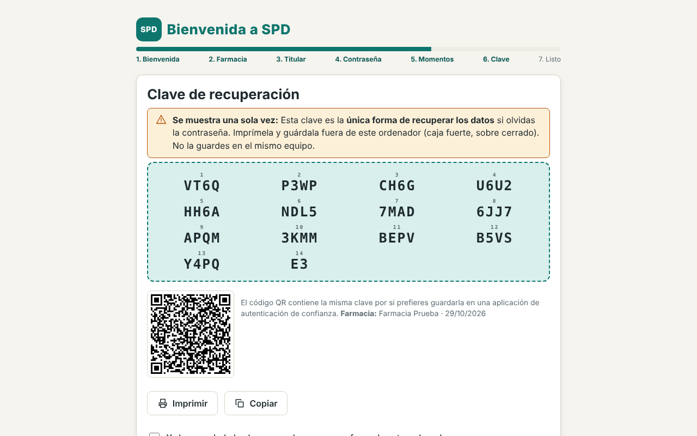
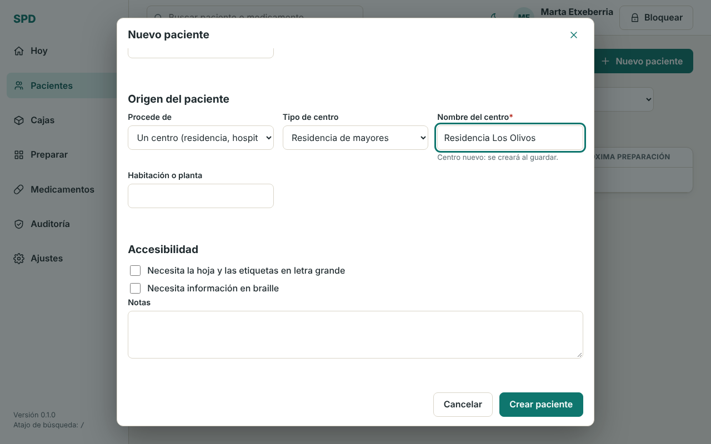
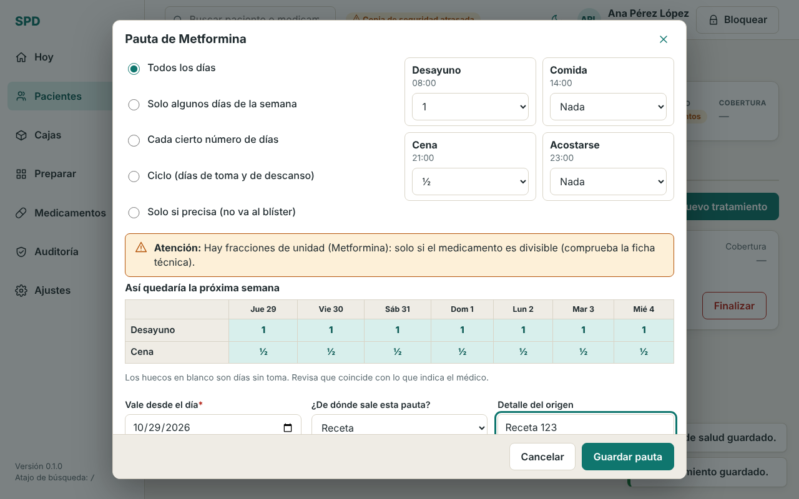
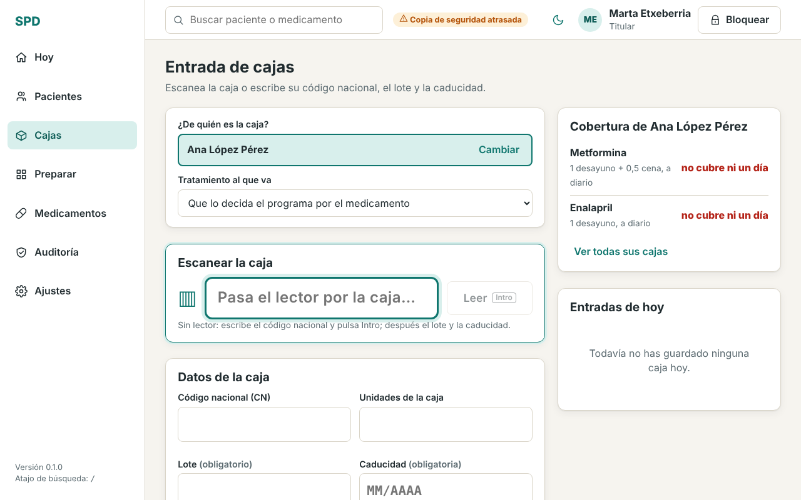
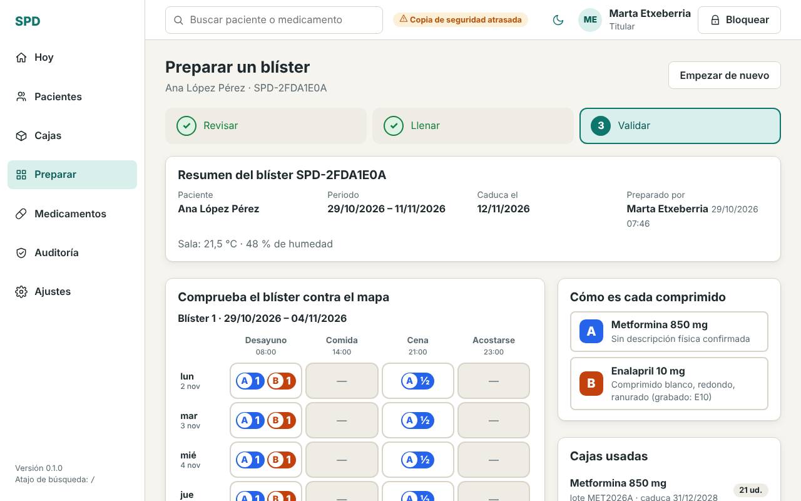
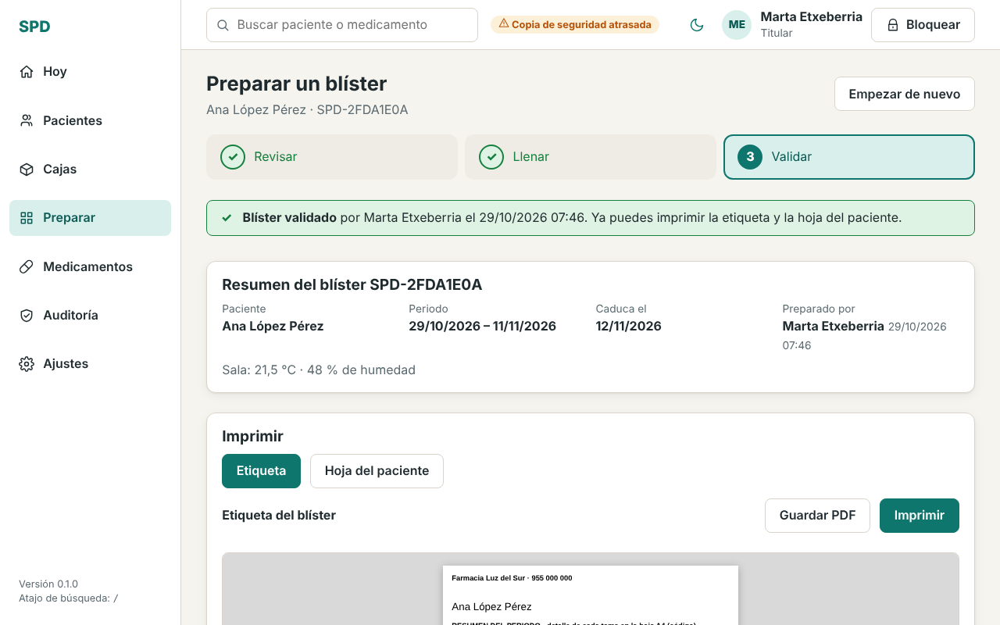
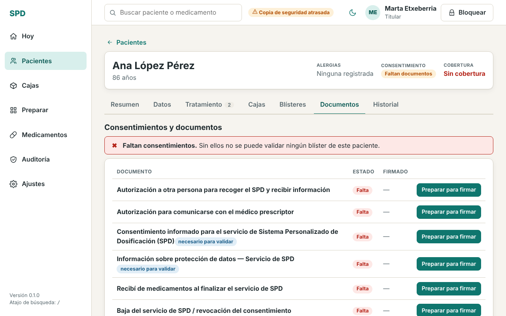
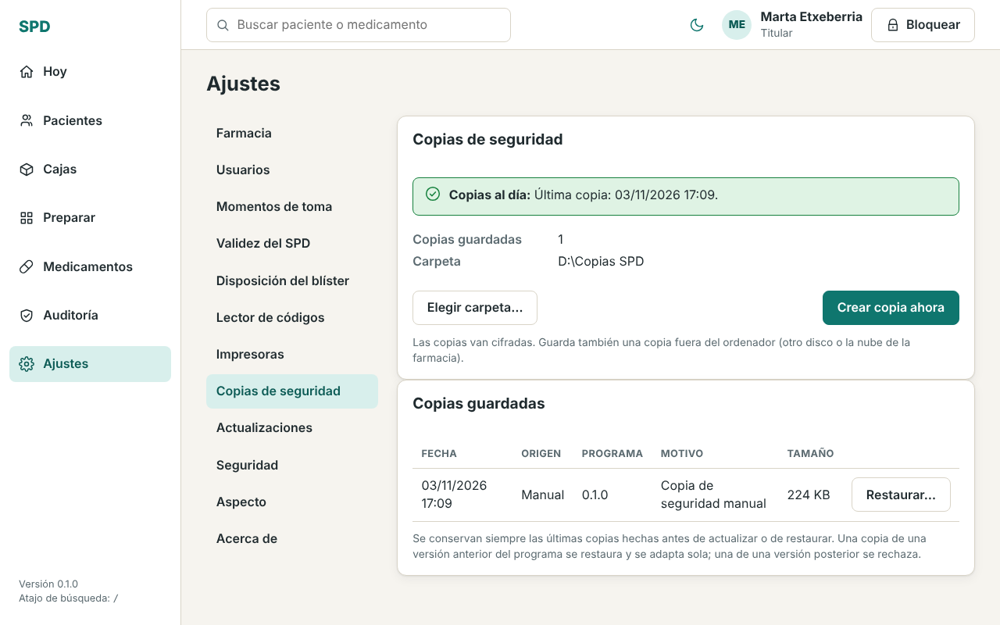
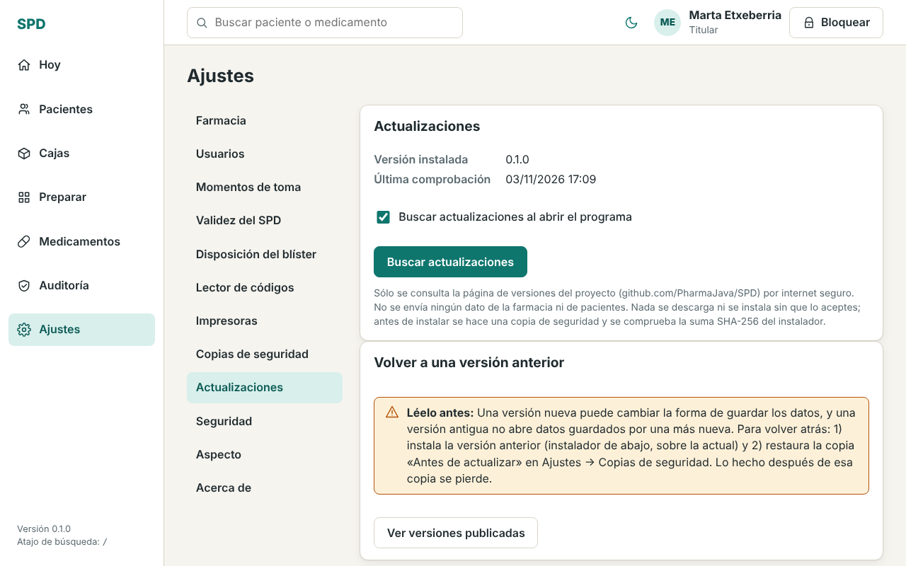

Guía rápida para el personal de la farmacia. Versión 0.1 · Programa gratuito para Windows.
Importante. SPD organiza, registra e imprime. No decide dosis ni tratamientos y no sustituye al farmacéutico ni a la ficha técnica. La farmacia es responsable de comprobar cada preparación y de los datos de sus pacientes.
1. Instalar el programa
Entra en https://github.com/PharmaJava/SPD/releases y descarga el fichero SPD-Setup-x.y.z.exe de la versión más reciente.
Ábrelo. Como el programa todavía no está firmado digitalmente, Windows puede mostrar el aviso azul «Windows protegió su PC» (SmartScreen). No es un virus: pulsa Más información y después Ejecutar de todas formas.
Acepta la licencia y sigue el instalador. Al terminar, abre SPD desde el escritorio o el menú Inicio.
Junto a cada versión se publica su suma de comprobación (SHA-256) por si quieres verificar el fichero descargado.
2. Primer uso: contraseña y clave de recuperación
La primera vez, SPD te guía en siete pasos: bienvenida, datos de la farmacia, datos del titular, contraseña, momentos de toma (desayuno, comida, cena…), clave de recuperación y final.
Contraseña de la farmacia (mínimo 10 caracteres): protege todos los datos de los pacientes. Elige una frase larga que recuerdes. Se pide al abrir el programa.
Cada persona del equipo entra además con su usuario y un PIN (Ajustes → Usuarios).
Clave de recuperación: se muestra una sola vez. Es la única forma de recuperar los datos si olvidas la contraseña. Imprímela y guárdala fuera del ordenador (caja fuerte, sobre cerrado). Sin contraseña y sin clave, los datos no se pueden abrir: nadie puede ayudarte.

Clave de recuperación: se muestra una sola vez
¿Contraseña obligatoria? No: la casilla «Proteger con contraseña (recomendado)» viene marcada. Si la desmarcas, SPD abre sin pedir nada, con tu usuario de Windows. Los datos siguen cifrados en el disco, pero cualquier persona que abra Windows con tu usuario podrá abrir SPD y ver los datos de los pacientes. Seguirás teniendo clave de recuperación. Puedes cambiarlo después en Ajustes → Seguridad (solo el titular, con un motivo; antes se hace una copia de seguridad). Si usas SPD en otro equipo o con otro usuario de Windows, hará falta la clave de recuperación.
PIN y usuarios: en Ajustes → Seguridad → PIN y usuarios el titular puede dejar de pedir el PIN y/o que se elija usuario al arrancar. Aunque no haya PIN, para validar un blíster hay que elegir a un farmacéutico o al titular y confirmarlo; la validación queda a su nombre.
Si olvidas la contraseña: en la pantalla de entrada pulsa «He perdido la contraseña» y escribe la clave de recuperación.
3. Dar de alta a un paciente
Menú Pacientes → Nuevo paciente. Obligatorios: nombre y primer apellido. Rellena fecha de nacimiento, tarjeta sanitaria y contacto, y revisa las alergias y datos de salud.
En «Origen del paciente» elige:
Individual: vive en su domicilio.
Un centro (residencia, hospital…): escribe el nombre del centro (si ya existe, se reutiliza), su tipo y la habitación o planta. Así puedes filtrar luego a todos los pacientes de una residencia.

Origen del paciente: individual o centro
Tras crearlo verás su ficha, con avisos de lo que falta («Qué hay que hacer»): consentimientos, tratamientos…
4. Medicamentos y pauta
En Medicamentos puedes buscar un medicamento en la AEMPS (CIMA) por su código nacional. A CIMA solo viaja el código nacional o el nombre del medicamento, nunca datos de pacientes. Lo que viene de CIMA se muestra con su fuente y tú lo confirmas o lo corriges. El aspecto del comprimido figura «por completar» hasta que un farmacéutico lo confirma.
En la ficha del paciente, pestaña Tratamiento → Nuevo tratamiento: indica el principio activo y la dosis, y después la pauta: qué días (todos, algunos, cada N días, ciclos, «solo si precisa») y cuántas unidades en cada momento del día. La tabla «Así quedaría la próxima semana» te permite comprobarlo antes de guardar.
Indica de dónde sale la pauta (receta, informe…): queda registrado. Las dosis las introduce o confirma un farmacéutico; el programa no las inventa.
Si cambia la pauta, no se borra la anterior: se guarda una nueva versión con quién y cuándo.

Editor de la pauta
5. Registrar las cajas
Cada caja que entra se registra en Cajas (o desde la ficha del paciente → Entrada de cajas):
Elige de quién es la caja (y, si quieres, a qué tratamiento va).
Escanea el DataMatrix de la caja con el lector (el cursor ya está en el campo). Si no tienes lector, escribe el código nacional y pulsa Intro.
Comprueba el lote y la caducidad: son obligatorios. Si el lector no los trae, escríbelos desde la caja.
Guarda. A la derecha ves la cobertura: cuántos días cubre ya lo registrado. Si no cubre el periodo, el programa te avisa antes de preparar.
Ante la duda (código ambiguo, lote ilegible) el programa bloquea y pregunta: nunca adivina un lote.

Entrada de cajas
6. Preparar y validar el SPD
Menú Preparar (o «Preparar blíster» en la ficha). Tres pasos:
Revisar: el programa comprueba consentimientos, cajas y caducidades. Si falta algo, lo indica y no deja continuar.
Llenar: sigue el orden de llenado e identifica cada caja leyendo su código con el lector. Una caja de otro paciente o caducada se rechaza.
Validar: la validación la hace un farmacéutico (o el titular) con su propio usuario, comparando el blíster con el mapa. Un técnico o administrativo puede preparar pero no validar.
La caducidad del SPD es de 14 días desde su preparación (ajustable hasta 30 solo si la farmacia lo activa en Ajustes y justifica cada uso). El programa guarda qué lote fue a qué blíster.

Paso de validación del blíster
7. Etiquetas e impresión
Una vez validado el blíster aparecen Etiqueta y Hoja del paciente (plan de administración en A4):
Pulsa Imprimir o Guardar como PDF: el PDF sale con el mismo diseño y tamaño que el papel (etiqueta o A4), elige tú dónde guardarlo (el nombre sugerido lleva apellidos y fecha, nunca el DNI) y sirve para imprimir en otro equipo si fallan las impresoras. Lo mismo vale para la hoja de trabajo y los documentos de la ficha. En Ajustes → Impresoras eliges la impresora y puedes imprimir una página de prueba; el tamaño de etiqueta es configurable.
Si el paciente necesita letra grande, márcalo en su ficha y saldrá así.
Después se registra la entrega al paciente o cuidador.

Etiqueta del blíster y botones de impresión
8. Documentos y consentimientos
En la ficha del paciente, pestaña Documentos, aparecen los documentos del servicio. Pulsa «Preparar para firmar», imprímelo, que lo firme el paciente (o su representante) y marca el documento como firmado.
Son obligatorios para validar el consentimiento informado del servicio y la información de protección de datos. Sin ellos no se puede validar ningún blíster (salvo que el titular lo desactive, ver más abajo).
Los textos son genéricos y son borradores: revísalos con un profesional del derecho antes de usarlos en tu farmacia. El documento impreso no lleva ninguna marca ni aviso del programa: es solo el texto del documento.
### Si la farmacia no quiere exigir los consentimientos
En Ajustes → Consentimientos el titular puede desactivar «Exigir consentimientos firmados para validar» (por defecto está activado). Pide un motivo escrito y queda en la auditoría. Si lo desactivas, la farmacia asume la responsabilidad de gestionar los consentimientos fuera del programa. Los pendientes se siguen mostrando, pero como información (no en rojo) y ya no impiden validar. Puede volver a activarse cuando se quiera.
### Consentimientos que recoge el centro (residencias): «gestionado sin firma individual»
Cuando el consentimiento lo recoge la residencia y no lo firma cada paciente, puedes dejarlo registrado sin falsear ninguna firma:
Un paciente: en su pestaña Documentos, botón «Gestionado sin firma» (junto al documento que falta). Escribe el motivo.
Todos los de un centro: en Pacientes, elige el centro en el filtro y pulsa «Aceptar todo». El diálogo te dice cuántos pacientes activos y qué documentos se registrarán, cuántos se saltan (porque ya lo tienen vigente), y pide un motivo obligatorio (por ejemplo, «Consentimiento recogido por el centro»).
Solo pueden hacerlo el titular y los farmacéuticos. En cada paciente el documento se ve como «Gestionado por el centro, sin firma individual», con fecha, quién lo registró y el motivo; nunca se muestra ni se imprime como firmado. Se puede revocar (queda en el historial), y si más adelante el paciente firma, se registra la firma sustituyendo al registro gestionado. Todo queda en la auditoría. Es una decisión de la farmacia, que asume esa responsabilidad.

Documentos del paciente: los obligatorios están marcados
### Avisos y notificaciones
Los mensajes breves que salen abajo a la derecha se cierran con un clic. Los de error y atención se cierran solos a los 10 segundos si no tienes el ratón encima; si el mismo mensaje se repite, no se apila: sale una vez con «×3», por ejemplo. Cuando hay varios, aparece «Cerrar todas».
En la pantalla Hoy, cada aviso que no afecta a la seguridad tiene «Marcar como visto» (queda atenuado) y «Quitar» (se oculta). «Quitar todos los vistos» oculta los ya vistos y «Mostrar de nuevo» los recupera. Lo mismo vale para el distintivo «Copia de seguridad atrasada». En este equipo solo se recuerda el tipo de aviso general que quitaste, nunca nombres de pacientes.
Los avisos de seguridad (consentimiento exigido que falta, caja caducada, alerta de calidad, alergia sin confirmar) no se pueden ocultar.
9. Copias de seguridad y restauración
Los datos están solo en este ordenador. Una avería o un robo sin copia significa perderlo todo.
Ajustes → Copias de seguridad: elige una carpeta (mejor un disco externo o la nube de la farmacia) y pulsa Crear copia ahora. Las copias van cifradas. Haz una al terminar cada jornada o al menos cada semana; si se atrasa, aparece un aviso arriba.
Restaurar: en la lista de copias pulsa Restaurar…, escribe la contraseña de la farmacia (si no usas contraseña de arranque, no hace falta) y la palabra RESTAURAR. Una copia hecha sin contraseña de arranque solo se abre en el mismo equipo y usuario de Windows; en otro hay que escribir su clave de recuperación. Cuidado: sustituye todos los datos actuales y se pierde lo hecho después de la copia (antes se guarda una copia del estado actual por si te arrepientes). Solo el titular puede restaurar.

Copias de seguridad
10. Actualizaciones
Ajustes → Actualizaciones. El programa comprueba si hay una versión nueva en la página de versiones de GitHub (no envía ningún dato de la farmacia ni de pacientes). Siempre pregunta antes: nunca descarga ni instala nada sin que lo aceptes, y nunca se reinicia solo. Antes de instalar hace una copia de seguridad y comprueba el instalador. Puedes desactivar la búsqueda al abrir el programa y pulsar Buscar actualizaciones cuando te venga bien (no a mitad de una preparación).

Actualizaciones
11. Si algo falla
Olvidé la contraseña → «He perdido la contraseña» + clave de recuperación (punto 2).
El lector no escribe el código → haz clic en el campo «Pasa el lector…» y prueba en Ajustes → Lector de códigos. Como alternativa escribe el código nacional, lote y caducidad a mano.
No imprime → Ajustes → Impresoras, elige la impresora y pulsa la página de prueba.
No me deja validar → faltan consentimientos, hay una caja caducada o de otro paciente, o el usuario no es farmacéutico.
Algo no cuadra tras actualizar → restaura la copia «Antes de actualizar» (Ajustes → Copias de seguridad).
El programa se bloquea solo → es el bloqueo por inactividad: vuelve a entrar con la contraseña (sin contraseña de arranque, solo vuelve a pedir quién eres).
«Windows no ha abierto los datos» → los datos se crearon sin contraseña con otro usuario de Windows u otro equipo: usa la clave de recuperación.
El historial de todo lo que se hace queda en Auditoría. Para dudas o errores escribe a través de conveniodefarmacia.com, indicando la versión (Ajustes → Acerca de) y sin enviar nunca datos de pacientes.
12. Acerca de y donación voluntaria
SPD lo desarrolla PharmaJava, farmacéutico y programador. Es un programa gratuito (freeware): la licencia permite usarlo y copiarlo sin cobrar, pero no venderlo ni modificarlo. Más herramientas para farmacia en https://conveniodefarmacia.com.
Si te resulta útil, puedes apoyar el proyecto con una donación voluntaria por PayPal (boarding87@gmail.com). Donar no da ninguna ventaja: el programa es igual para todos.